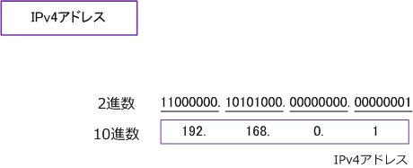
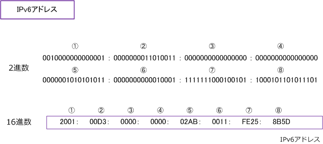
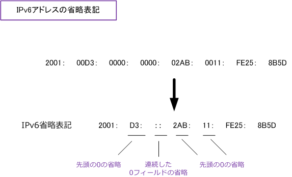
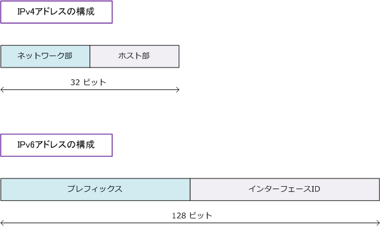
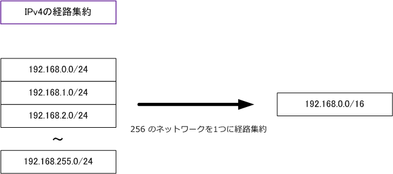
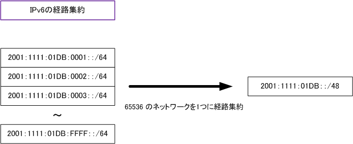

IPv6 - addressing
IPv6アドレスの表記方法
IPv4アドレスは、32ビットを8bitごとに ピリオド( . )で区切り、4つのフィールドに分け10進数で表記。

IPv6アドレスは、128ビットを16bitごとにコロン( ： )で区切り、8つのフィールドに分け16進数で表記。

※ IPv6アドレスでは16進数値のアルファベット「A～F」の大文字、小文字が区別されることはありません。
IPv6アドレスの省略方法
IPv6アドレスは16進数で表記しても長いことから、以下の3つの省略ルールがあり省略表記も可能です。
?@ フィールドごとに先頭の0の並びは省略可能 例 01DA ⇒ 1DA 0012 ⇒ 12 01B0 ⇒ 1B0
?A フィールドのビットが全て0の場合、1つの0に省略可能 例 0000 ⇒ 0
?B ビットが全て0のフィールドが連続している場合、その間の0を全て省略して2重コロン(：：)に省略可能。 例 2001：0000：0000：0000：aaaa：bbbb：cccc：1111 ⇒ 2001：：aaaa：bbbb：cccc：1111
◇ 「：：」は１つのIPv6アドレス内で一度だけしか使用できないので、例えば以下のような省略はできない。 例（×）2001：0000：0000：1111：aaaa：0000：0000：1111 ⇒ 2001：：1111：aaaa：：1111
◇ 上記のようなアドレスの場合、省略ルールの?Aを使用して、以下のように省略することができる。 例（○）2001：0000：0000：1111：aaaa：0000：0000：1111 ⇒ 2001：：1111：aaaa：0:0：1111

IPv6の「 プレフィックス 」と「 インターフェースID 」
IPv4アドレスは、ネットワーク部とホスト部によって構成されます。IPv6アドレスは、プレフィックスと インターフェースIDにより構成されます。IPv6のプレフィックスは、IPv4のネットワーク部に該当します。 そして、IPv6のインターフェースIDは、IPv4のホスト部に該当します。

IPv6アドレスは、IPv4アドレスと同じように / を使用することで、プレフィックスを示すことができます。 例えば 2001：1111：2222：abcd：aaaa：bbbb：cccc：1111 のIPv6アドレスを持つホストがいるとして そして 2001：1111：2222：abcd のネットワーク上のホストとします。その場合はホストのIPv6アドレスは 以下の表記となります。※ IPv6アドレスは1つのフィールドで 16ビットであり4つのフィールドは64ビット。
2001：1111：2222：abcd：aaaa：bbbb：cccc：1111/64
上記のIPv6アドレスは、ホスト部を全て0ビットにしてネットワークアドレスとして次のように表記できます。
2001：1111：2222：abcd：0000：0000：0000：0000/64 2001：1111：2222：abcd：：/64 （省略表記）
IPv6のアドレス経路集約
IPv4アドレスでは「192.168.0.0/24 ～ 192.168.255.0/24」 の256つのネットワークを1つのネットワーク に集約したい場合、ネットワーク部の8ビットを使用して 「192.168.0.0/16」 とすることにより実現します。

IPv6アドレスも同様に例えば「2001：1111：01DB：0001：：/64 ～ 2001：1111：01DB：FFFF：：/64」 の65535のネットワークを1つのネットワークに経路集約したい場合、プレフィックスの16bitを使用することで 「2001：1111：01DB：：/48」と定義すると実現します。
